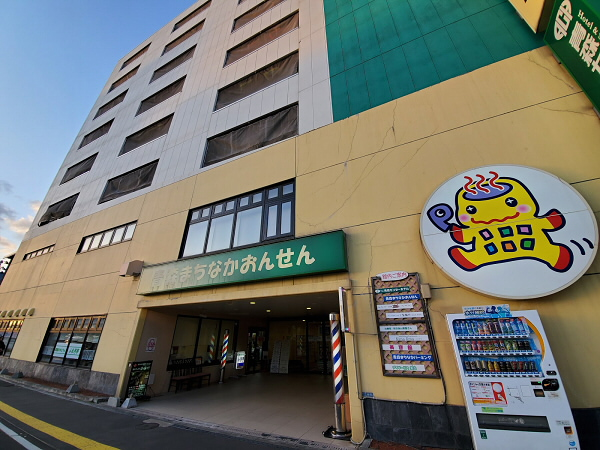

- 


| 面白さ | 快適さ | 料金 | 衛生面 | 周辺施設 |
|---|---|---|---|---|
| 4 | 5 | 3 | 4 | 4 |
今回は青森市の古川にある「まちなか温泉」さんを訪れました。
温泉とホテルがセットになった施設で、利用者がとても多いです。
泉質はナトリウム塩化物泉という事で、切り傷や皮膚病、神経痛などに効果があります。
脱衣所は綺麗に片付けられており、清掃がこまめにされている様子。

そして気になっていた浴場はとても広く、お風呂の種類も大風呂、露店、薬湯といったように豊富です。
お湯は透明でつるつるしており、肌によさそうな感じ。

大きめの子供風呂もある為、家族連れの方でも楽しめそうです。

大風呂は熱すぎずぬるすぎずで、長時間浸かっていられるものになっていました。
また、サウナに力を入れているとの事で、毎日1日に2回「熱波」と呼ばれるサウナファンにはたまらないサービスを行っているとの事。
何でも人間の体は薄い膜に包まれているようなのですが、その熱波を行う事でその膜を吹き飛ばし、一気に体温を上昇させるのだとか。
私は普段あまりサウナは利用しないのですが、話を聞いているうちに汗が流れ落ち、自分もいつか体験してみたいと思いました。

そうこうしている内に体が熱くなり、水分を求め、自販機を探していると何やら変わったものが。
というのもその自販機はオロナミンCとポカリスエットしか飲み物がない。
これはどういう事か話を伺うと、サウナ好きの方々の間で流行っているドリンクで「オロポ」というものがあり、オロナミンCとポカリスエットを混ぜて作るとの事。
どうやらサウナ人気が凄かった事から試しに設置してみたら爆発的に売れたとか...恐るべしオロポ。

その他、リラクゼーションコーナーも充実しており、特に漫画を約5000冊揃えているというのが最高ですね。
そして、定期的にビンゴ大会というものもやっているらしく、景品として最新大型テレビを始めとした、豪華賞品を提供しているとの事。
ビンゴカードは1枚100円で1人何枚でも購入できるとの事で、やらなきゃ損って感じです笑
そして帰り際、バイキングの料理を少しいただいたのですが、とてもおいしく、驚きました
バイキングは入浴とセット料金なのですが、そのセット料金が1000円となんとも破格。
入浴料が450円ですので550円でバイキングを食べる事ができる。何て神なサービス...
バイキング料理を満足するまで食べ、気持ち良くまちなか温泉さんをあとにしました。

街の中心に位置しており、駅も近い事からアクセスしやすいのがポイントの温泉です。
総責任者様は熱意のある方で、地域の方々に楽しんでもらう事を最優先として活動しており、何事にも前向きに挑戦するスタイルの方でした。
また、ほぼ毎日と言っていい程イベントを開催しており、お客さんを飽きさせないようにしているのが伝わってきました。
今後もまちなか温泉さんの動向には目を離せません笑
近いうちにまた伺いたいと思います。